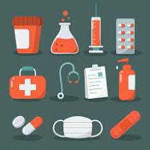

Welcome
Welcome to PharmaCare Hub — your partner in safe and effective healthcare.
Here you’ll find more than just information: we provide practical tools,
trusted resources, and guides designed to empower pharmacists, students,
and healthcare professionals. Whether you’re learning the foundations of
pharmacy, checking for drug interactions, or seeking best practices for
patient safety, PharmaCare Hub is here to support your journey.
Our mission is simple: to help you grow in knowledge, strengthen your
confidence, and make a lasting impact in the lives of those you serve.
Explore, connect, and discover how PharmaCare Hub can be your trusted
companion in professional growth and safe medication practices.
